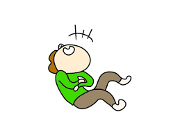

Gigglr is a random joke generator which is a fun and interactive web application designed to provide users with a continuous stream of random jokes. Users can log in to save their favorite jokes for future laughs and view them in a personalized list. The app fetches jokes from a third-party API, ensuring a wide variety of humor. Additionally, it updates saved jokes in real-time, allowing users to share their favorites with friends instantly. With a clean and responsive design, the application is easy to use and guarantees a lighthearted experience for all.